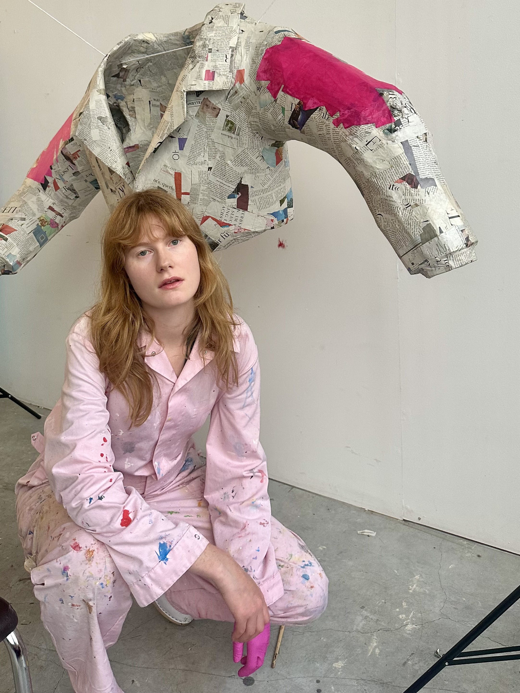

UUlrike Siemer is an artist and sculptor based in Brussels She develops an artistic practice at the intersection of papier-mâché sculpture, set design and performance.
Her work explores objects, wearable forms and the narrative possibilities of materials, with a particular interest in experimentation and collaborative practices.
She is drawn to everyday objects and the ways in which they can be shifted away from their original function. These objects surround us and become part of our lives, often without us paying much attention to them. Through her work, she seeks to give them a new presence, moving them into a personal imaginary world.
